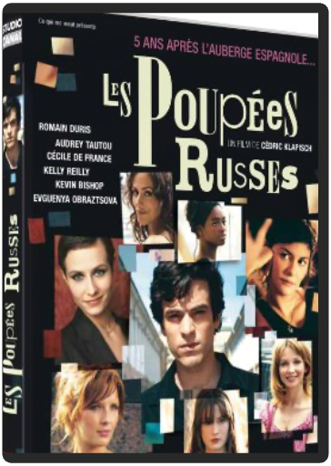

les poupées russes - édition collectorcédric klapisch  Le principal atout des Poupées russes est d’être un film autonome qui dissimule avec finesse des clins d’œil aux fans du premier opus. S’agit-il dès lors ici d’une véritable suite ? Oui, mais une suite intelligente où Klapisch se fait le témoin privilégié de son personnage fétiche en pleine crise d’« adulescence ». Xavier doit ici faire face à sa vie et aux poupées croisées sur son chemin (casting divers et charmant, dont la drôlissime Cécile de France). Il serait pourtant malvenu d’enfermer Les poupées russes dans le registre de la comédie : plus riche, mieux maîtrisé, le film devrait encore mieux vieillir que son aîné. En attendant des retrouvailles dans quelques années…à Rome, puisque tous les chemins y mènent ! On peut croire à un troisième opus tant les suppléments nous montrent à quel point tout le monde semble prendre plaisir à ces retrouvailles. Heureusement que le making-of est là pour rappeler que Les Poupées russes est d’abord un film au-delà d’une réunion d’anciens élèves avec, cependant, ce terrible aveu : au premier jour du tournage le scénario n’était pas écrit ! Résultat : des méthodes de tournage assez aléatoires et pas moins d’une heure vingt (intéressante et commentée) de scènes coupées ! www.ecranlarge.com  madagascar 3 : bons baisers d'europeeric darnell madagascar 3 : bons baisers d'europeeric darnell De retour d'Afrique, où leur dernière aventure les avait menés, Alex et ses fidèles amis Marty, Gloria et Melman aspirent désormais à rentrer chez eux, à New York, et à retrouver le cadre familier du zoo de Central Park. Autant dire qu'ils sont prêts à tout pour y parvenir ! Alors que King Julian, Maurice et les Pingouins se joignent à eux, leur nouvelle expédition rocambolesque les conduit en Europe où ils trouvent la couverture idéale : un cirque ambulant dont ils deviennent les héros... |


 Made with Delicious Library
Made with Delicious LibraryNancy, State zipflap congrotus delicious library Thomas, Julien